01
AI enablement & Claude integration
Claude, with typed tools over the systems you already run.
Read more about AI enablement & Claude integrationWe build AI-powered intelligence platforms for operationally complex businesses like construction, civil engineering, fabrication, and industrial safety. Your engineers get back to engineering, instead of moving data between systems.
Trusted by teams doing high-consequence work
Read the case studies
Services
Ten services, from a short readiness review to a platform built from nothing. Each one has a page with the detail.
10 services
01
Claude, with typed tools over the systems you already run.
Read more about AI enablement & Claude integration02
Typed objects, typed relationships, and a graph you can query.
Read more about Business ontologies & knowledge graphs03
Connect what you already run. Replace nothing.
Read more about Systems integration & data infrastructure04
The loops nobody wants to run by hand.
Read more about Advanced workflow automation05
Plans, PDFs, and vendor quotes turned into structured data.
Read more about Document intelligence & extraction06
Retrieval that cites its source.
Read more about Data management & retrieval07
Usually you do not need one. When you do, we prove it works.
Read more about Custom model training & evaluation08
Software built around your workflow, not the other way round.
Read more about Custom platforms & product engineering09
A roadmap that gets executed, not a slide deck.
Read more about Strategic AI advisory10
We come to you, and train the people who will run it.
Read more about On-site consulting & trainingThe difference
Most companies have years of calls, emails, quotes, and decisions sitting in storage, unqueryable. We build the layer above it: a typed object graph where a person belongs to a company, a call produces a decision, a decision creates work, and that work rolls up into an invoice, so every dollar traces back to the conversation that created it.
Connected systems
Nothing gets replaced. The tools your team already relies on stay put. We make them reachable, searchable, and useful to the people and the AI that need them.
and anything with an API
Purpose-built products
Estimating that takes three days. A takeoff redone because the plans changed. A settlement report keyed in by hand. These are not software problems in general. They are your problems specifically, and general software will not fix them.
Process
Every engagement runs the same way, from understanding to impact.
Map your landscape, surface the real problems, and identify where AI can move the needle.
Design the technical strategy, data flows, and system architecture from the ground up.
Engineer the solution, embedded with your team, shipping iteratively, testing with real users.
Deploy, monitor, and continuously improve. The system gets smarter as your business grows.
Our perspective
Software fails when it is designed for the person who bought it. We interview the estimator, the field lead, the admin, and the new hire, because the system only works if the person with the least time and the most interruptions can use it on a bad day.
Selected work
Storefronts, configurators, and a free mobile app. The engineering discipline is the same; only the audience changes.
E-commerce · Powersports
A Colorado manufacturer of American-made, tool-free cargo racks and accessories for UTVs and side-by-sides, plus an outdoor and tactical gear line.
hornetot.comConfigurator · Overland
Premium off-road camper trailers, sold through an interactive build-your-own configurator that prices and previews every option as you go.
badlandcampers.comMobile · Community, pro bono
A free iOS and Android app, built and given away. Device-identity auth, no passwords, no accounts, no analytics. Inventories never leave the pair of people they belong to.
Source & privacy policyThe Beginners Sponsorship Guide is a community-service project offered free of charge. It is not affiliated with, endorsed by, or associated with Alcoholics Anonymous World Services, Inc. All A.A. literature referenced in the app remains under the copyright of A.A.W.S.
Case studies
Two engagements, start to finish: the problem, what we built, and what changed.
How custom AI-powered automation eliminated manual data entry and accelerated project delivery for a coastal engineering firm.
Engineers were spending multiple weeks manually entering data from PSDDF (.pso) and SETTLE3 (.pdf) model outputs into Excel spreadsheets, then manipulating that data to generate settlement analysis graphs and account for variables like sea level rise.
Built with: React.js frontend, .NET backend API
“Dozier Tech Group delivered an exceptional solution that transformed our settlement analysis process, and it has been a game changer for our workflow. What once took weeks is now completed in minutes, with significantly improved accuracy and scalability. They eliminated time-consuming manual processes, shortened QAQC time, and enabled us to handle significantly larger volumes of data with ease. The results exceeded expectations both in performance and speed. Their team demonstrated strong technical expertise, responsiveness, and a clear understanding of our engineering needs. A highly effective and professional team.”
How a leading commercial construction firm leveraged a $30,000 pilot to gain competitive advantage through AI and robotics, adding 10 to 20 hours of productive capacity per person, per project.
Chase Group Construction, managing multiple high-value concurrent projects, saw an opportunity to gain significant competitive advantage by leveraging emerging AI and robotics technologies. Their next phase of growth required capturing institutional intelligence, increasing bid velocity, deploying autonomous site technologies, and seamless integration without disrupting proven workflows.
AI-powered intelligence platform
Autonomous robotics R&D partnership
Built with: React.js frontend, .NET backend API, Chroma vector database, Model Context Protocol, Microsoft Graph, QuickBooks
Get in touch
Louisiana · working with clients anywhere